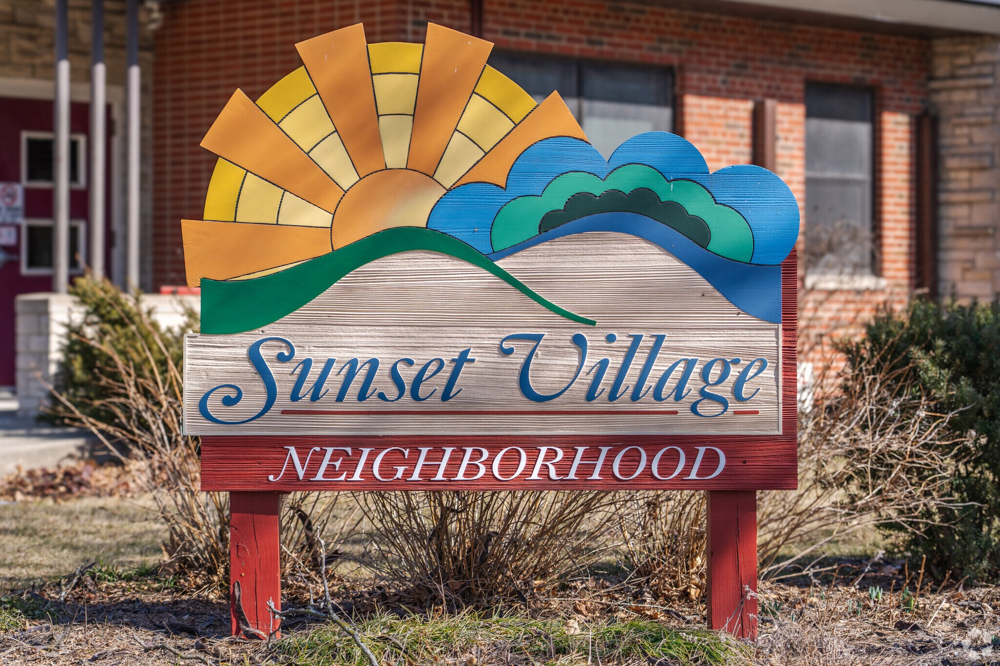

On November 19th, 2024 you and your pup went for a 2.68 mile walk through Sunset Village, which has been described as "a cozy neighborhood on the near west side of Madison, nestled on tree-lined streets with rolling hills and panoramic views." The temperature was 55°F with a real feel of 43°F due to the 16.6 mi/hr wind blowing from the WSW. You logged over 15k steps over the 54 minute walk, ascending 174ft and logging 15 stops detailed below.

My dog can get anxious when I have to stop and wait for traffic, so when the crosswalk helps us cross quicker it helps improve his behavior on the walk.
Crosswalks help indicate to drivers that a pedestrian would like to cross the road and where they should do it. I chose somewhat positive, because many times the drivers in Madison still do not stop for walkers even if they are in a crosswalk.
Cabot gets happy and stimulated when walking by this fire hydrant and always acts stoked after he gets to check it out.
Sniffing and peeing on this fire hydrant brings Cabot joy, but does not really affect my walk either way.
Sidewalks seem to make my dogs feel calmer/ less aware of cars that are passing allowing them to enjoy other parts of the walk more.
Sidewalks make the walking experience safer by separating us from cars that are driving.
Having to walk for a longer amount of time of busy roads causes excess stimulation and anxiety for my dog. I also tend to walk faster and give my dog less leash when on these busy roads to try to keep my dogs safe, which seems to make the walk less enjoyable for Cabot.
This tree work closed the sidewalk cut through that allows me to easily get to quieter roads in the neighborhood. This closure forced us to turn around and backtrack on two busy roads before we could get into our desired neighborhood.
Cabot enjoys being in the park, so having a way to quickly enter the park allows us to incorporate the park into most neighborhood walks.
These stairs allow me to easily get up to the park, which allows me a chance to be in nature and escape the city.
Cabot loves being on the park trails and enjoying all the smells (and peeing on the plants).
It is really nice to be able to quickly get to the park and be in nature. It allows me to escape from the city, even just for a moment.
Cabot could care less if I have to carry his poop or if I get to throw it away. He is just glad he gets to poop whenever he feels the like it.
I do love my dogs, but I don't love carrying their poop. Having trash can locations along my our route allows me to deposit the poop and enjoy the walk more.
Fast cars can cause my dog anxiety and can trigger barking/ pulling behavior.
Anything that encourages drivers to slow down in neighborhoods are good in my book. The slower drivers are going the more aware they tend to be of their surroundings (and the people/ dogs waking near them).
Cabot enjoys peeing on trees and sniffing around. I do not let him do this in people's front yards, so having areas like this allow him a chance to enjoy himself.
I enjoy personally enjoy anything that increases the amount of plants/ trees on my walk. This island is aesthetically pleasing and makes the road more enjoyable to walk up.
Since I would not allow Cabot to sniff or pee on this (being in someone's yard) the beauty is lost on him.
One of my favorite parts of neighborhood walks is enjoying the amazing landscaping/ gardens people have in their yards. It truly brings me joy to see flowers and plants everywhere.
As stated above keeping my dogs of busy roads helps reduce their anxiety. Also, since so many dogs use these cut throughs there is so much good pee-mail to check.
These walkways between neighborhoods allow walkers to avoid busy roads on their walks and make the walks safer and more enjoyable.
Having multiple entrances/ exits to parks make it so we are more willing/comfortable to walk our dogs in these areas, which they enjoy (ie. grass, sniffing trees, etc.)
Having easy access to a neighborhood park (4 entrances) allow people options for entering/ exiting the park that works for their family. For example, we can use a different exit to avoid children or other dogs that may agitate or rile our dogs up. If there was only one way in/out of the park we potentially would avoid it to make sure we did not put ourselves in challenging situations with our dogs.
Sand helps make slippery surfaces have more traction, which are safer to walk on. Also sand does not burn their paws.
Madison supplies sand to homeowners to help make their driveways & sidewalks have more traction in the winter. As a city they encourage people to use sand instead of salt. As a pet owner this is amazing, because it is impossible to know if the salt people are using is pet friendly & if it is not you run the risk of your pet burning their paws.
Cabot just loves to pee on trees and he has such a thick coat that anything that shades the sun/ makes things cooler in the hot months make his walk better.
Not only does having trees make neighborhoods more aesthetic, but they also help keep the neighborhood roads/ sidewalks cool with their shade in the summer.
These wooded parks allow my dogs the experience to have dirt trails under their feet, smell all the good nature smells, and get a break from cars.
Parks help me escape the city and enjoy nature.
lorem epsum